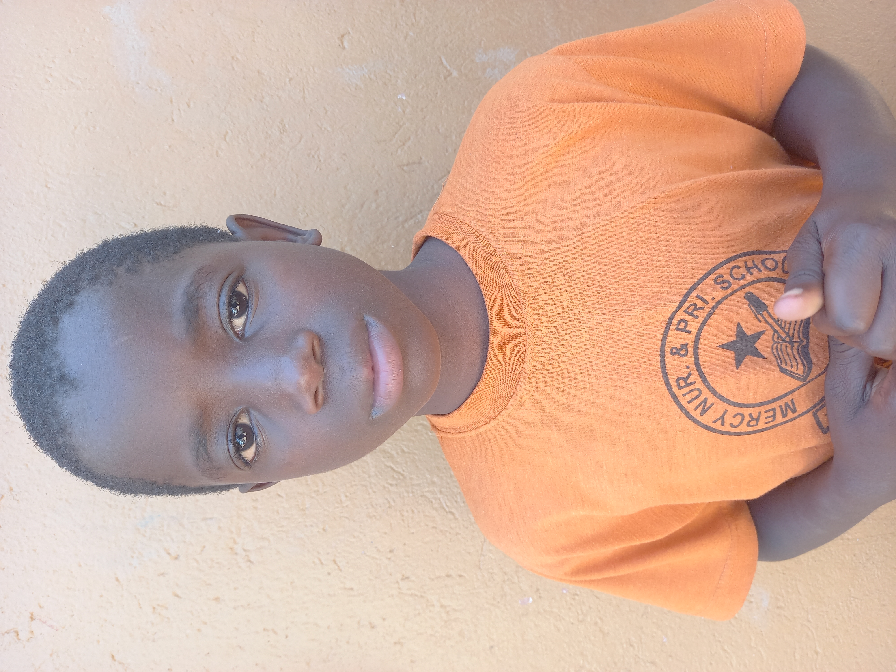
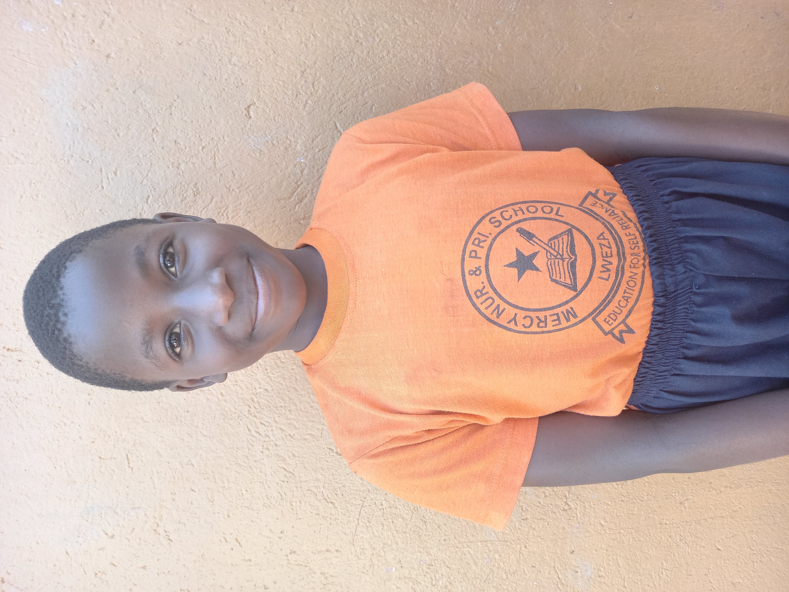

MISSION
To aid vulnerable children by providing educational and material support, promote their self-worth and prepare them to overcome the challenges of life with confidence as successful and responsible law abiding citizens.
MAIN OBJECTIVES
Combat Illiteracy : Spearhead a campaign against illiteracy by providing access to quality education and fostering talent development among children through various avenues such as music, drama, and sports.
Individual Sponsorship: Seek individual sponsors to support the education of the most vulnerable children, both within Uganda and beyond, ensuring they have access to the opportunities they need.
Advocacy Centers : Establish advocacy centers in local communities dedicated to championing the rights and welfare of vulnerable children, creating a supportive network for their development and protection.
SUCCESS STORIES
"I used to stay at home when my friends go to school because mummy could not pay my school fees...after getting a sponsor am so happy to be in school with my friends. Thanks to the Rainbow school in the Netherlands for supporting my education"
Maria, Primary 2
THE BOARD OF DIRECTORS

The board of directors supervises the work of the organization. The executive director who reports to the board at the board members meetings every month. This board plays an important role in the overall oversight of the organization to make sure everything is running according to plans.
ABOUT THE ORGANIZATION
Child Smile Foundation is a community based organization intended to provide protection and safety to all children especially the most defenseless in our communities by providing education, food and clothes to the most vulnerable. Our organization wishes to see that all the children in our communities receive care and love from parents, guardians and fellow socialites in the community. An Asian proverb states: If you're planning for a year sow seeds, if you're planning for ten years, plant trees but if you're planning for a hundred years, educate people.
Indeed when it comes to providing solutions that are long lasting, education is imperative because it develops a person's ability to make decisions that will improve his life. One of the best gifts we can pass on to our children is to provide them with education as a tool to fight ignorance and poverty in order to live in prosperous communities. We believe that if children are educated, they will become better equipped to deal with the problems of life. They can also gain moral strength needed to overcome harmful habits.

Child Smile Foundation is the right place for the education of the orphans and vulnerable. Our organization promotes the rights of children and encourages all stakeholders and partners to play their roles in supporting the children by promoting their rights to play, their rights to education, safety and protection, their rights to eating good food and access to clean water. Children also need enough rest and sleep to promote both their physical and mental growth among others.
EDUCATION IS POWER

A DEDICATED TEAM OF VOLUNTEERS
Child smile Foundation is run by a dedicated team of volunteers who are willing to accomplish their work with dedication and resilience in order to reach the main objectives of the organization. This team enjoys a vast experience in the management of the organization with all humility, transparency and a great spirit of team work which helps the team to accomplish lots of good things for the children. This tam work has resulted in accomplishing lots of progress in the field of education and moral and protection of children under our care. The team is ready to support any child at any time and makes sure all children under our care enjoy their rights and accept their obligations as well for a good functionality of our organization.
CHILDREN ARE THE FUTURE GENERATION
Poverty alleviation strategies is the way to go if we want to reduce poverty and live into prosperous communities now and in the future. The children need attention especially during these last days when they have become victimes to many predators who can easily destroy their lives without compassion.
Child Smile Foundation is doing everything in its reach to give all necessary support to vulnerable children and orphans in our communities to ensure every child has access to education, support also those elderly persons who are giving support to their grand children. We have done this for many years and now we are very happy to see that many vulnerable children and orphans have access to basic education which opens up all other opportunities for success in the future.
Would you like to live in the world where children and young people are valued and properly care for? This would pave way to a new generation of people who care for each other and for their loved ones. This is all about life as God intended it to be.
VISION
To build strong communities by empowering children with education as a tool to improve on their lives through provision of knowledge and development of practical skills that enable them to achieve self-admiration, self-reliance and become confident successful champions in their communities
GOAL
To build our capacity to increase and support as many vulnerable children as possible by creating a conducive environment for them to receive education and providing them with other necessities so as to enjoy life as dignified human beings.
VALUES
- Passion
- Love
- Consistency
- Integrity
- Team Work
- Achievement
SUCCESS STORIES
"I used to stay at home when my friends go to school because mummy could not pay my school fees...after getting a sponsor am so happy to be in school with my friends. Thanks to the Rainbow school in the Netherlands for supporting my education"
Maria, Primary 2
THE MANAGEMENT COMMITTEE
The management committee is composed of diffrent magagers and heads of departments at different levels. The heads of these committees report directly to the executive director. The management committee is in charge of the daily activities of the organization at different levels.
SUPPORT A CHILD TODAY
At Mercy Nursery and Primary School Lweza, there are many children who need your support for them to continue their education that is at risk of being interapted at any moment from now because of lack of support. Please sopport one child today.